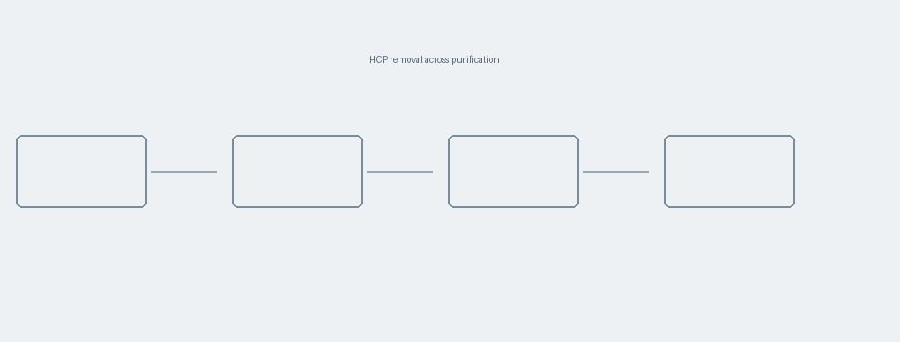

宿主细胞蛋白残留：检测方法、覆盖率评估与限度设定
2026-08-24
·
由 14 篇笔记整理
宿主细胞蛋白（Host Cell Protein, HCP）来自表达体系，随下游纯化被部分去除。 残留 HCP 的风险不只在于免疫原性，某些酶活性组分还会降解制剂中的辅料 —— 聚山梨酯降解就是典型例子。
方法选型
ELISA 与质谱是两条主线。ELISA 通量高、灵敏度可达 1 ng/mg 量级， 但依赖多抗试剂对 HCP 谱的覆盖；质谱能给出组分身份，代价是前处理复杂、定量下限较高。
| 方法 | 定量下限 | 能否定性 | 主要限制 |
|---|---|---|---|
| ELISA（多抗） | 1–5 ng/mg | 否 | 覆盖率未知则结果不可解释 |
| LC-MS/MS（DDA） | 10–50 ng/mg | 是 | 高丰度产物压制低丰度 HCP |
| LC-MS/MS（DIA） | 5–20 ng/mg | 是 | 需谱图库，方法开发周期长 |

图源：《Analytical Characterization of Biotherapeutics》Ch.9覆盖率评估
二维电泳配 Western blot 是经典做法，近年更多用抗体亲和纯化结合质谱鉴定 （AAE-MS）。两者都在回答同一个问题：多抗试剂能识别到细胞裂解液中多大比例的蛋白。
覆盖率 = 被抗体识别的斑点数 / 总斑点数 × 100%
（2D-DIGE 计数口径，需注明所用染色方法）限度设定
常见做法是把限度定在 100 ng/mg 以内，
但这个数字不是法规规定的通用阈值。ICH Q6B 只要求基于工艺能力与安全性
论证，具体限度须结合给药途径、剂量与临床阶段。
参考文献
- Analytical Characterization of Biotherapeutics
- Wang X. et al. 10.1002/bit.26466
- ICH Q6B — Specifications: Test Procedures and Acceptance Criteria
延伸阅读
以下为他人文章，仅列标题与原文链接。